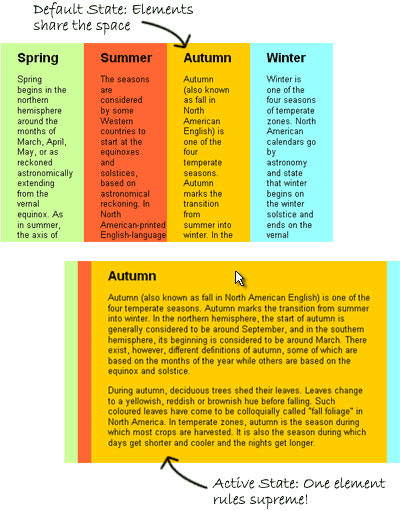
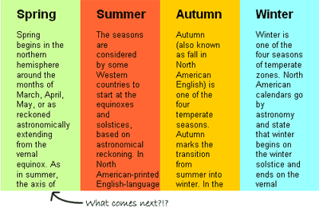

Update: I’ve created an advanced version of this technique that works in IE6! Read more here.
The Accordion Effect is fast becoming one of the most commonly used (and perhaps abused?) effects of the Web 2.0 world. Most JavaScript frameworks make such an effect fairly easy to pull off – heck, MooTools even built their reputation on it in the early days. So what makes this accordion effect special? It doesn’t require a single line of JavaScript.
First off, what is an “accordion” effect? Generally speaking, the accordion effect takes several larger elements and then compresses them into a small space so that only a small portion (like a heading) of most or all of the elements is visible. Then, when the user interacts with that element — either by clicking on it or maybe only mousing over — the accordion expands so that the element of interest is visible, and the other elements shrink down automatically. When it’s in use, it looks a bit like an accordion expanding and contracting: hence the name.
Our accordion will work exactly the same way: all of the elements will be partially visible when the user loads the page. And then when they mouse over a particular section, it will instantly expand – and the other elements will contract – to make reading more easy.

So how do we accomplish this trick? First, we start with our XHTML, which just consists of a couple of divs with some IDs applied:
<div id="accordion">
<div id="part1">
<p>This text is in part 1.</p>
</div>
<div id="part2">
<p>This text is in part 2.</p>
</div>
<div id="part3">
<p>This text is in part 3.</p>
</div>
<div id="part4">
<p>This text is in part 4.</p>
</div>
</div>
My first div defines where my accordion starts and ends. The divs nested inside are just parts of my accordion – they don’t even technically need IDs unless I want to style them differently. That’s all the XHTML it takes!
So now, let’s start building our accordion. We start by defining the physical limitations of our space:
#accordion {
width: 500px;
margin: 100px auto; }
All I’ve done is give my accordion a specific width and centered it in the page for a nice visual effect. Now, I have to create the default state for the divs inside of my accordion:
#accordion div {
float: left;
width:25%;
height: 300px;
overflow: hidden;}
This snippet floats all of my divs to the left and gives them a specific width and height. I’ve chosen a width of 25% because I have four elements in my accordion, so they all split that width up evenly by default. If I’d had five elements, I would have used 20%, and so on. My height of 300 pixels also becomes the height of my accordion div.
The overflow: hidden part here is also crucially important. This is what prevents my divs from either resizing to fit their content or spilling their content out of the containing div and onto our page. It also creates a nice visual effect… people will wonder what content they’re missing, and will mouse over the area to investigate.

So now that we’ve created our default state, we need to create our hover or “active” state. This requires two CSS rules. The first looks like this:
#accordion:hover div { width: 20px; }
We’re using the :hover pseudo-class here in a pretty creative way – we’re telling all of the divs inside of the div we’re hovering over to change. Specifically, we’re shrinking them all down to 20 pixels to make room for our expanded accordion section. So now we just need to make sure it expands:
#accordion:hover div:hover {
width: 440px;
overflow: auto; }
The :hover pseudo-class comes into play here again. Now, we’re applying styles to an element we’re hovering over, inside of an element we’re hovering over. We’re styling this element differently than our others by giving it a specific width – 440 pixels, i.e. 500 pixels minus the 20 pixels taken up by our other three divs – and setting its overflow to “auto.” These two classes cause our active div to expand, and then give it a scroll bar if the content is too long.
And that’s all there is to creating a CSS-only accordion box! If you’d like to see it in action, click here. The only change I’ve made to the full version is I’ve added a few background styles and some interior padding to each of the accordion sections to make them stand out and look a little more attractive.
This example creates a horizontal accordion box. But it’s just as easy to create a vertically oriented accordion. All we really need to do is eliminate the floats on our nested divs and turn most of our width tags into height tags. Here is the markup:
#accordion {
width: 500px;
height: 400px;
margin: 20% auto; }
#accordion div {
height:25%;
overflow: hidden;}
#accordion:hover div {
height: 20px; }
#accordion:hover div:hover {
height: 340px;
overflow: auto; }
And you can see it in action here.
As with any trick this cool, there are some caveats. Most significantly: this technique does not work in IE6, (update: now works in IE6! Read more here) because IE6 doesn’t support hover states on anything other than anchors. Therefore, you can make it work if you’re willing to make a sacrifice: if you wrap all of your divs in anchor tags, and then apply the hover state to those anchors instead of your divs, the technique should work the same (I haven’t tried it, though). However, that wouldn’t be particularly semantic or valid, so I’m not showing it here.
Also, if you apply any padding or borders to your #accordion div, that can cause some problems. The border and padding are part of your div, and therefore part of your :hover class. However, if you’re hovering over the containing div’s padding, you aren’t hovering over one of the sections of your accordion – meaning all of your interior divs will shrink down to their smallest size, and none will grow to fill the space. It took me half an hour of debugging to figure this one out. :)
So there you have it. Use it, share it, love it. And let me know in the comments if you come up with a particularly interesting or attractive implementation – mine is obviously pretty simple!
Check http://alejandroaraneda.blogspot.com
Insper in Timo Huovinen’s CSS-only HTML-valid new drop-down menu system, I have developed my own system for CSS-only HTML-valid crossbrowser (IE6-7-8, FF, Cr, Op, Sa) horizontal accordion menu. I also added sliding effect with CSS3-transitions (Cr, Sa, and next FF and Op) and SMIL (HTML+TIME for IE6-7-8)
Pingback: Geek is a Lift-Style. » Best Of April 2008
Pingback: 精选30个优秀的CSS技术和实例 | 田园牧歌
Pingback: 20 Advanced CSS Techniques and Examples – Designers Need to Know | TechCircles
Pingback: Anonymous
I can’t wait to try this. I’ve been fidgeting with the spry accordions in Dreamweaver and I’ve been having some..err..difficulties. Thank you!
Pingback: 25个高级CSS技巧教程 | 完美时光
Pingback: 精选30个优秀的CSS技术和实例 | 用户体验设计家园|UEDHome
Pingback: 10 CSS tricks that make website looks cool instantly! « akarticles
Pingback: 用户体验：30个CSS网站导航条设计 | 鸟人网
Pingback: The CSS-Only Accordion Effect | Creative Web India
Pingback: Live Video Tutorial » 30 Advanced CSS Techniques
Pingback: » 30个流行的CSS网站导航条 精华分享网-分享互联网
To make this work in IE just try Using DOCtype in your html
Great tutorial !!!
Pingback: 30个常用CSS导航栏目技巧 | 宝典网
Pingback: 30个优秀的CSS技术和实例 | ODTEAM
Pingback: 25个CSS高级进阶教程 | ODTEAM
Pingback: Accordion Navigation Bars « iliveilearniprogress
Pingback: 10 CSS Tricks To Spice Up Your Website | Webwibe
Pingback: 优秀的30个CSS技术和实例 | 阿越的博客
Nice…. Thanks
Pingback: CSS Slide Down Menu - XHTMLforum
Pingback: 30 Exceptional CSS Navigation Techniques - desmaksolutions.com | desmaksolutions.com
Pingback: 30 Exceptional CSS Techniques and Examples | graftek.net
Pingback: 30 Exceptional CSS Techniques and Examples | Graphic Techniques
Thanks, I’ve recently been looking for facts about this subject for ages and yours is the best I have located so far.
Css is perfect for accordion there is no need for jQuery thnx a lot guys i was searching it for looong time!
Pingback: 30种时尚的CSS网站导航条_理想&美人
Thanks for a marvelous posting! I actually enjoyed reading it, you happen to be a great author.I will make sure to bookmark your blog and will eventually come back someday. I want to encourage continue your great work, have a nice weekend!
Pingback: 20 Tutorials that Will Improve Your CSS Skills and Make You a Better Coder | SpyreStudios
Would be nice to see a vertical accordion example.
продажа запчастей для ЗИЛ, ГАЗ, КАМАЗ, ГАЗЕЛЬ, КРАЗ…
I love the use of CSS to my site Thnx for helping!
i prefer the css solution for accordion, is great and easy to use, easier then javascript or jquery. I recommend it 100 % !
Pingback: Joshua Sean Web Design.. » Blog Archive » 10 JS ANIMATE FRAMEWORKS/20 CSS TOOLS/ 30 CSS Techniques
very nice tutorial for CSS effect!
Pingback: 30种时尚的CSS网站导航条 | 外贸建站|外贸seo|seo技术
would want to thank you for the work you get in writing this post. I am hoping a similar best work from you later on also. The fact is your creative writing ability has encouraged me to begin my own personal weblog now.
I honestly liked the article, along with the especially cool weblog
Pingback: 20 Tutorials That Will Improve Your CSS Skills and Make You a Better Coder | Nelson3 Blog
Accordion is exact that i was looking for! Merci beaucoup Rob!
Why to not make a combination of css and html? It is better to use only css for make it load faster?
Pingback: CSS Skills and Make You a Better Coder | VapvaruN | WP Experts
If my page is php based its ok to put the css only accordion effect or it will be a problem?
Pingback: 10 CSS tricks that make website looks cool instantly! | stealyou.com
Pingback: Div+Css页面特效代码30个 | 瑞克互动博客
Pingback: 精選30個優秀的CSS技術和實例 « orangeflower1219
One of my favorite posts.
Pingback: Google